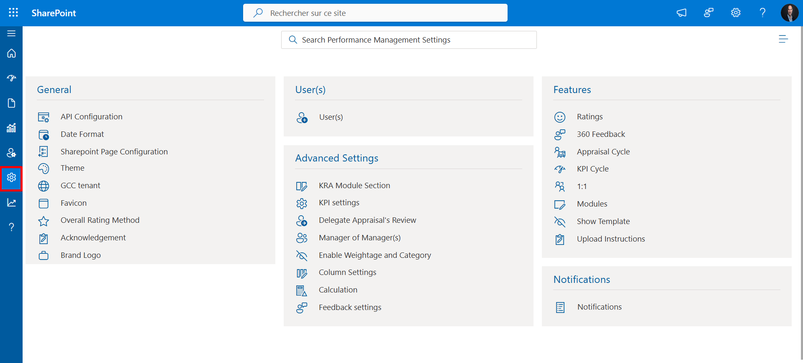
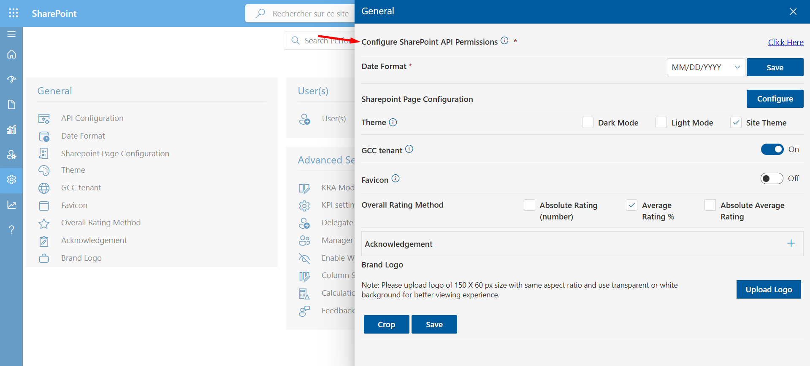
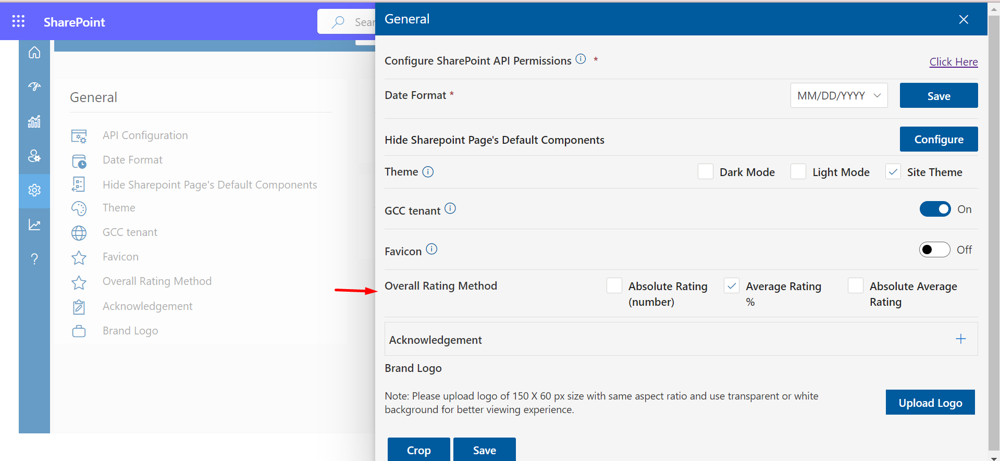

-
Settings
Setting options, as mentioned below, are available for Admin, HR Manager Admin, and HR Head admin. All the general settings like adding users to the application, notification settings and features setup or setup the appraisal cycle, etc. could be accomplished via setting.
Under the settings tab, subsets are provided for general, users, notifications, and feature settings.

Settings
General Settings
-
API Configuration: API configuration help in working delta sync, excluding unlicensed and shared mailbox users on theuser's page Click on the link.

-
Date Format: Admin could select the desired date format (Reflects the entire application like date columns etc.)
-
Theme: A theme could be selected for the application.
-
Hide Sharepoint Page's Default Components: This component is an integral part of SharePoint by default.

- Hide Side Navigation Panel : Hide side navigation panel in sharepoint page where app is running
- Hide WebPart Title : GCC (US Government Community Cloud), if your Microsoft 365 tenant is GCC, please enable this setting to make it work
- Remove Custom Webpart CSS : Enable this toggle will remove space outside of webpart
- Hide Top Command Bar on Sharepoint Page : Instructions for hiding the Top Command Bar on a SharePoint page
- Hide Top Site Header: Instructions for hiding the Top Command Bar on a SharePoint page
Select Configure to process further.


-
GCC tenant: GCC (US Government Community Cloud), if your Microsoft 365 tenant is GCC, please enable this setting to make it work

-
Overall Rating Method: Three methods of calculation are available. Upon completion of the selection review, you must select one of them. then a review calculatiojn will show accordingly.

-
Acknowledgement: For adding the Acknowledgement click on (+) button.

Here you can set the date format, and theme color, configure SharePoint API
permissions, hide the side navigation panel, hide the web part title, remove the
custom web part CSS, final rating, brand logo, etc.
After adding Acknowledgement click on save button.
Brand Logo: Clients/ User could update their company logo which would be displayed on the top left corner of the navigation panel.